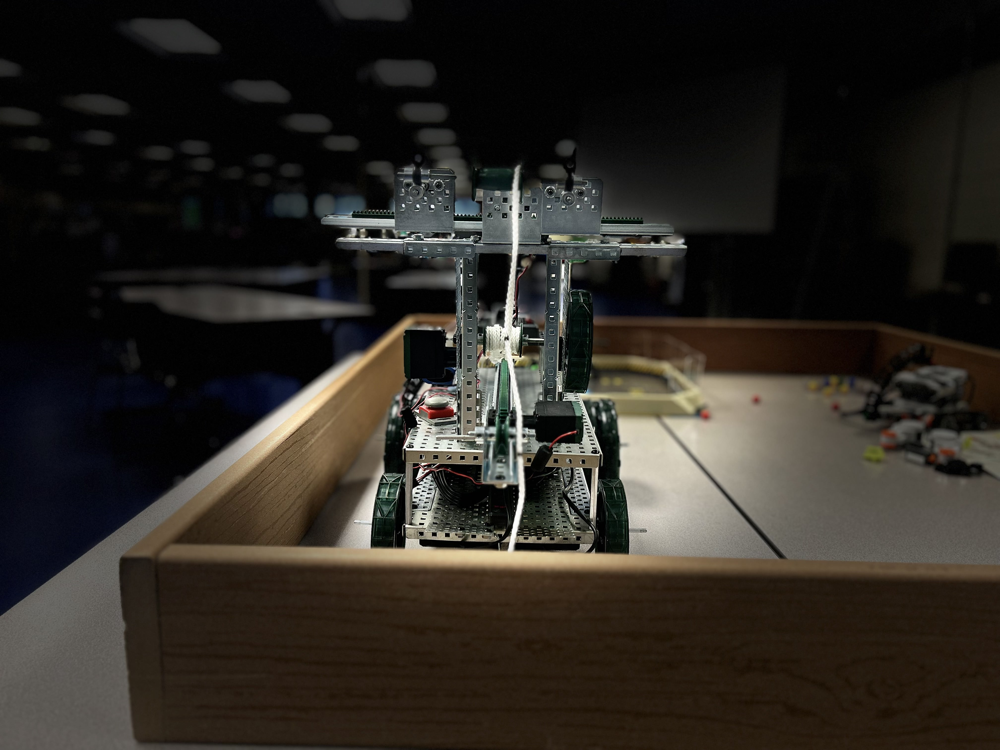

Features
Welcome to Fishing Remote Controlled Robot , your ultimate destination for all things fishing! Whether you're a seasoned angler or just starting out, our site is packed with features designed to make your fishing experience easier, more enjoyable, and more successful. From expert tips and gear reviews to interactive maps and up-to-date fishing reports, we provide everything you need to plan your next adventure. Explore our community forums, shop the latest equipment, and access essential tools like weather forecasts and tide charts—everything is at your fingertips to help you reel in the big one!
- Remote control operation
- High-definition camera for underwater viewing
- Durable and waterproof design
- Long battery life
- Easy-to-use interface
